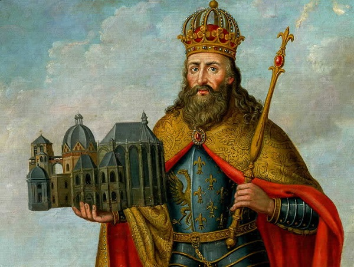
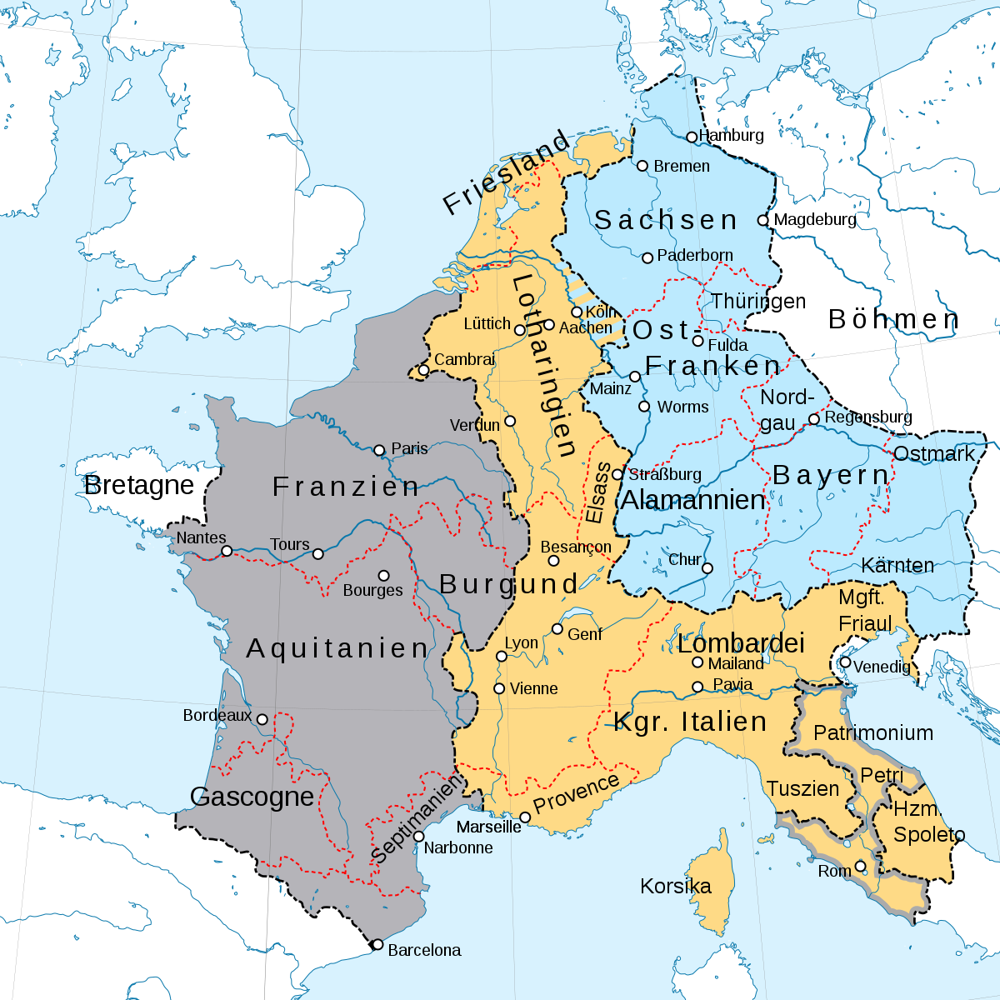
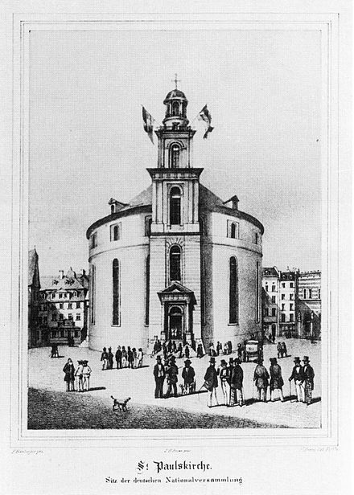
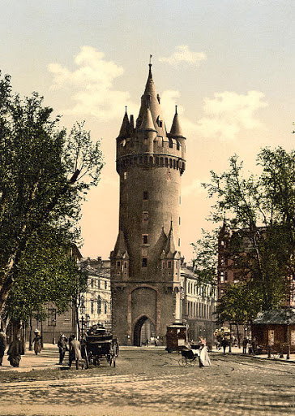
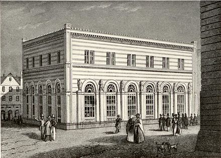
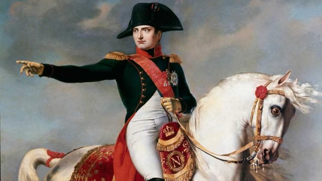
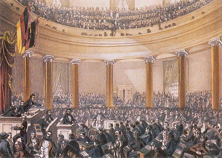
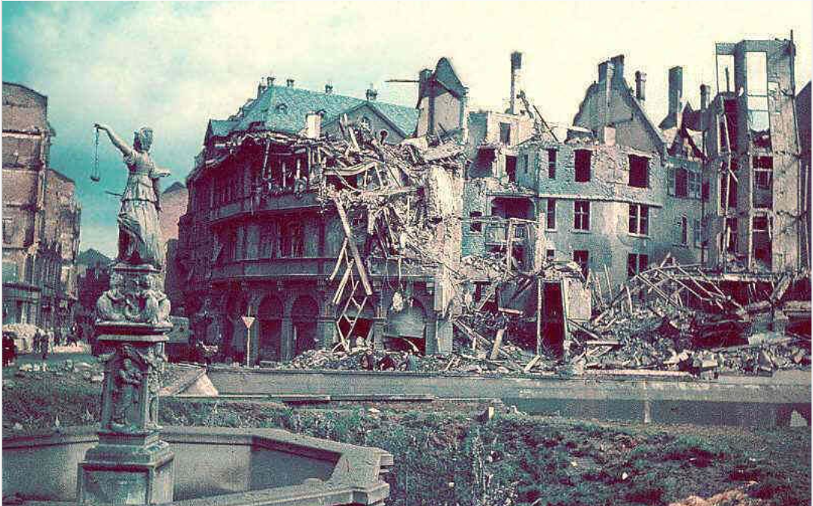
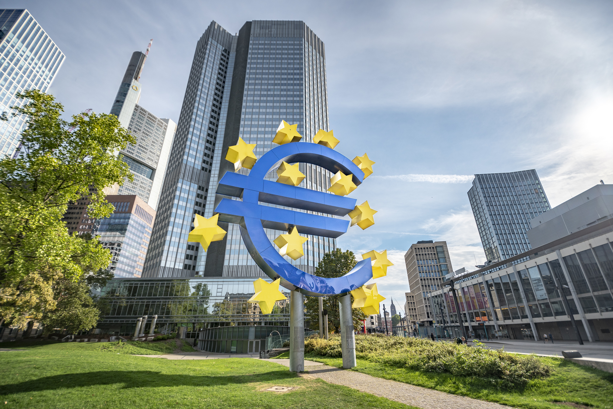

Haz click en el año del que quieras saber más...
Primeros registros de Frankfurt
794Frankfurt: Sede del Parlamento
843Frankfurt: Ciudad Imperial
1245Ciudad oficial de elecciones y coronación
1356Se funda la Bolsa de Valores
1585Llega Napoleón, fin de la soberania
1806Se crea la primera Constitución
1848La destrucción despues de la guerra
1945Frankfurt: Capital financiera de Europa
1998
794 d.C.Frankfurt fue mencionada por primera vez en 794 en un documento con el que Carlomagno donó un terreno al monasterio de Ratisbona Sankt Emmeram ("expedido en el río Meno en un lugar llamado Frankfurt"). Karl llegó a Frankfurt a finales de 793, donde se había ubicado una corte real en el Römerberg desde el siglo VII . En ese momento, Frankfurt ya era un lugar importante junto a Mainz . Volver |
 |
|  |
843 d.C.Frankfurt se convirtió temporalmente en la capital del Imperio de Franconia Oriental y en sede del Parlamento y era el estado palatino más importante del Imperio. Las frecuentes estancias de los emperadores y reyes y las numerosas dietas y asambleas eclesiásticas contribuyeron significativamente al desarrollo de Frankfurt en una ciudad importante. Incluso cuando los emperadores alemanes ya no residían permanentemente en un solo lugar, Frankfurt siguió siendo la finca de la cámara imperial y la capital de Franconia oriental. Volver |
1245 d.C.En la época de la Alta Edad Media , la ciudad de Frankfurt experimentó su primer apogeo . Fue provocada por dos elecciones imperiales en estrecha sucesión en 1147 y 1152, que a partir de entonces hicieron de Frankfurt la ciudad electoral de los reyes alemanes . En 1245, Frankfurt se convirtió en una ciudad imperial inmediata y, por lo tanto, en un municipio en gran parte autónomo dentro del territorio del Sacro Imperio Romano Germánico. Si bien la violencia en la ciudad estuvo inicialmente en manos de funcionarios reales, con el tiempo el alcalde se convirtió en la autoridad política más importante. Volver |
 |
|  |
1356 d.C.El Golden Bull es un documento importante en la historia de Frankfurt . Con el documento firmado en 1356 , que, por así decirlo, representaba la “Ley Fundamental” del Sacro Imperio Romano Germánico, Frankfurt se convirtió en la ciudad permanente de elecciones para los reyes alemanes. Frankfurt ya contaba con unos 10.000 habitantes en el siglo XIV . La torre Eschenheim todavía se conserva de las fortificaciones que se construyeron recientemente en ese momento . En 1405 la ciudad compró algunas casas adosadas en el Römerberg y las convirtió en el ayuntamiento . Incluso hoy el "Römer" es uno de los ayuntamientos más famosos de Alemania. Volver |
1585 d.C.En 1530 la Reforma entró en Frankfurt. En los años siguientes se celebraron en la ciudad varias convenciones de príncipes protestantes . La afluencia de familias protestantes desplazadas de toda Europa , que encontraron un nuevo hogar en Frankfurt , también contribuyó al boom económico de la ciudad . En 1585 se llegó al establecimiento de la Bolsa de Valores de Frankfurt . El trasfondo fue el problema de que se utilizaban innumerables monedas diferentes en la metrópolis de comercio y ferias de Frankfurt , para las cuales no existían tipos de cambio fijos. Para detener el fraude y la usura, los comerciantes de la ciudad acuerdan establecer tipos de cambio . Volver |
 |
1806 d.C.Con el fin del Sacro Imperio Romano Germánico en 1806 terminó la soberanía de Frankfurt como ciudad imperial . En los años siguientes, la ciudad cayó bajo el dominio de varios príncipes y ducados y, después de ser conquistada por los franceses bajo Napoleón, finalmente se convirtió en la capital del departamento de Frankfurt. Tras la victoria sobre Napoleón se restauró Frankfurt en 1815 como ciudad libre dentro de la federación alemana . Volver |
 |
|  |
1848 d.C.Se creó el Bundestag de la Confederación Alemana en Frankfurt. Después de la Revolución de marzo de 1848 , la Asamblea Nacional de la ciudad fue convocada y adoptada en la Iglesia de San Pablo , la primera constitución democrática. En 1866 , Frankfurt fue ocupada por tropas prusianas durante la guerra alemana y finalmente anexionada . A finales del siglo XIX , en el curso de la industrialización , se inició un rápido crecimiento demográfico y una enorme expansión de la infraestructura. Volver |
1945 d.C.Como resultado del bombardeo de la Segunda Guerra Mundial , Frankfurt perdió su casco antiguo, que se conservó casi por completo desde la Edad Media . Casi todo el centro de la ciudad de Frankfurt fue destruido en 1945. Después de la guerra, la decisión del Ayuntamiento en contra de una reconstrucción de la ciudad según el modelo histórico . Solo unos pocos edificios llamativos , incluido el romano , fueron reconstruidos con sus fachadas históricas . El nuevo paisaje urbano de Frankfurt se componía cada vez más de edificios de gran altura.y forma de rascacielos . Volver |
 |
|  |
1998 d.C.En 1949, la ciudad se presentó a las elecciones como la nueva capital de la República Federal de Alemania , pero fue derrotada por Bonn . A pesar de esta derrota política, Frankfurt se convirtió rápidamente en uno de los centros económicos y comerciales de la República Federal a partir de la década de 1950 . Hoy en día, la metrópoli del Main es el centro financiero indiscutible de Alemania y desde 1998 alberga el Banco Central Europeo, una de las instituciones financieras mundiales más importantes. Gracias a su conveniente ubicación , Frankfurt vuelve a ser uno de los centros más importantes para el tráfico aéreo, ferroviario y por carretera de Alemania y Europa Central . La estación principal de trenes de Frankfurt es la estación de trenes de larga distancia más importante de Alemania y el aeropuerto de Frankfurt / Main es, con mucho, el aeropuerto de carga y tráfico más grande de la República Federal . Volver |